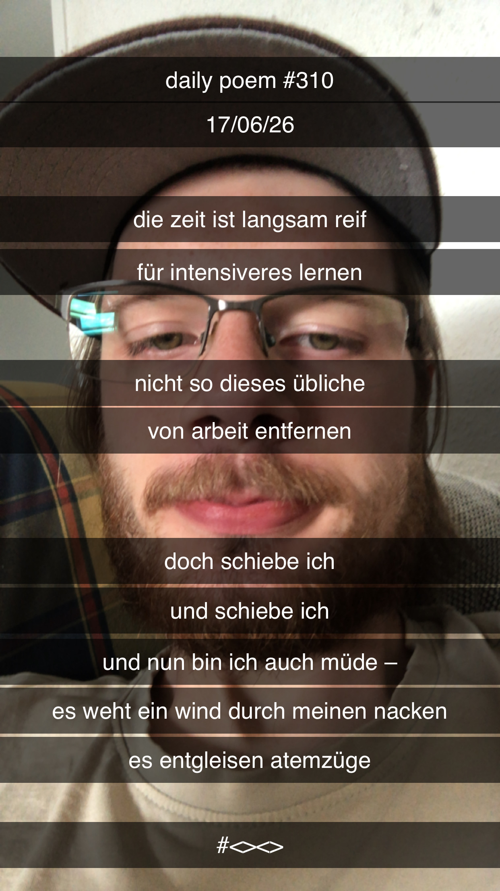

Wieder mal 'nen Tag verschenkt
[310]Die Zeit ist langsam reif
Für intensiveres Lernen –
Nicht so dieses übliche
Von-Arbeit-Entfernen –
Doch schiebe ich,
Und schiebe ich,
Und nun bin ich auch müde –
Es weht ein Wind durch meinen Nacken,
Es entgleisen Atemzüge.
